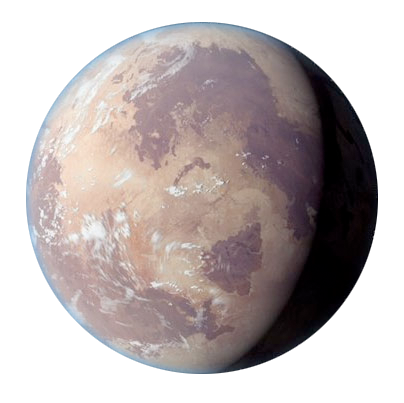

Tatooine era un planeta desértico circumbinario escasamente habitado ubicado en los Territorios del Borde Exterior de la galaxia. Era el mundo natal de Anakin y Luke Skywalker.
Como parte de un sistema estelar binario, el planeta fue oprimido por soles abrasadores, lo que provocó que el mundo careciera del agua superficial necesaria para sustentar grandes poblaciones.